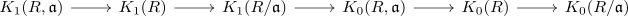

Talk: Relative K1-Gruppe
meta
default Notation
- $R$ is a ring, unital but not necessary commutative
- Ideals are assumed to be two-sided, unless stated otherwise
other notes
- I follow the numbers of the script
- In these notes, I may write alternative (categorical) proofs and I will
Motivation
We want to construct long exact sequence

Hence we will also need a notion of relative $K_1$
This gives us further tools to compute $K_1(-)$ (by restricting the possiblilities).
Furthermore we may use powerful tools of homological algebra, especially the Five-Lemma / Four-Lemma of modules of monomorphisms / Four-Lemma of modules of epimorphisms
This comes at the cost of $K_1$ being a "worse" invariant.
Aspects
Reminder
- explicit description of a pullback of a ring and ideal
- whitehead theorem for K1 of a ring
- snake lemma for groups and normal subgroups
7.1
7.2
- relative infinite general linear group and projection
- relative infinite general linear group depends only on the ideal
7.3
- natural transformation from elementary linear group to general linear group
- natural transformation from infinite elementary linear group to general linear group
- exact diagram of infinite general linear groups and elementary linear groups
- relative infinite elementary linear group as normal subgroup
- explicit description of the relative elementary linear group
7.4
- relative K1-Group of a ring and ideal
- relative K1-Group functor from Pairs of Rings
- relative K1-Group as kernel
- map from relative K1 to K1
- K1 of a ring as relative K1 group
- forgetful natural transformation from relative K1 to K1 of rings
- morphism of pair of ideals induces morphism on pullbacks